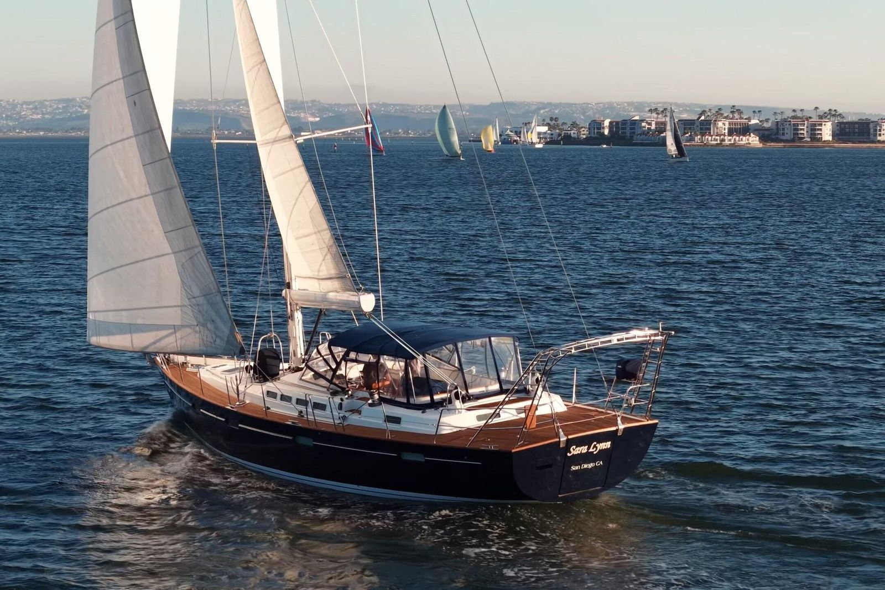
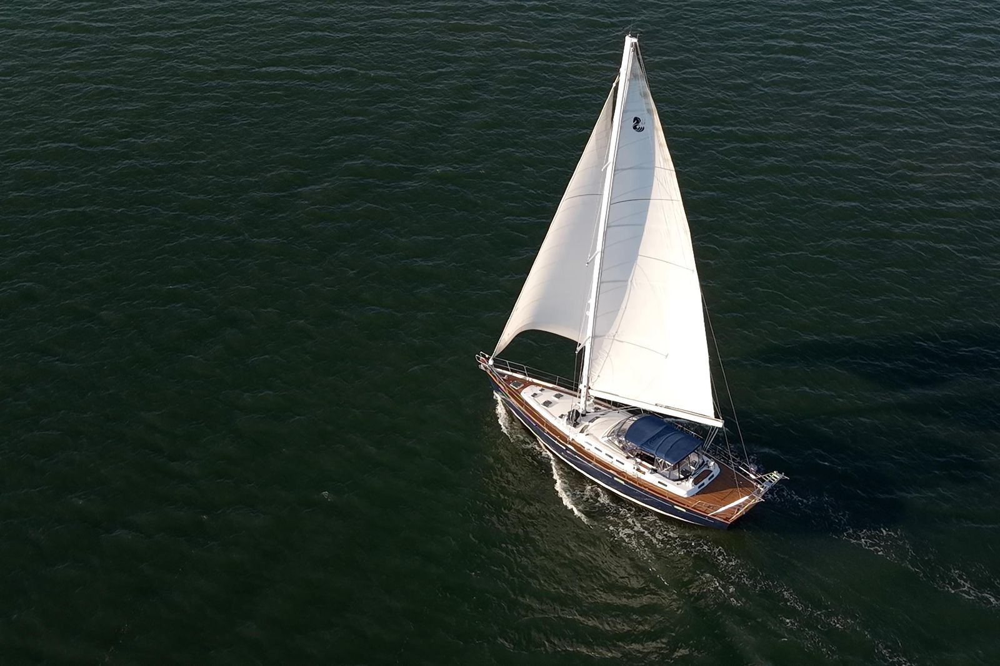
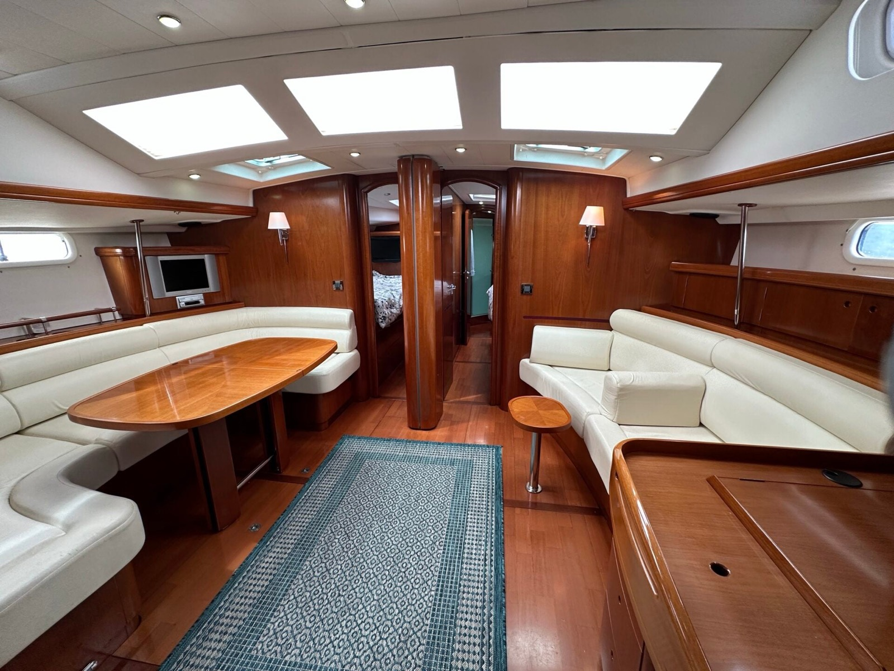

84.3%
Waterline / length
49.25 ft on 58.40 ft. Moderate, on the 75 to 85 band. The 57.0 header would push her into the long band. The chart uses 58.40 because that is the length the specification and the class card both print.
 Sara Lynn
Sara Lynn
2003 Beneteau 57 · Deep keel · San Diego
A low-hour Farr 57 with a new rig, and the ocean kit still to buy.
Planning all-in loads with the page.
The boat
Sara Lynn is a 2003 Beneteau 57, lying in San Diego, offered by Swiftsure Yachts at $295,000. The listing prints the name as SARA LYNN and then writes Sara Lynn in the body. Bruce Farr drew the hull. Franck Darnet did the interior. Beneteau built her. The class was first built in 2002. The Swiftsure product page does not name a salesperson. The YachtWorld listing names Alex Perry, a representative of Swiftsure Yachts.
The short length field says 57.0 feet. The specification says 17.8 m, 58.4 ft. The ratios on this page use 58.4.
She is the four-cabin, center-cockpit version. Two guest doubles forward, each with a head, and a shower those two cabins share. A starboard watch cabin with a single berth. A full-beam owner’s cabin aft, with its own head and shower. The listing counts bunks for seven, four heads, and three showers. Air conditioning has a thermostat for the saloon and for each cabin. The interior is described as Alpi, in a fruit-tree color. The photographs show that wood. They do not prove the species.
The hull is navy. The deck, the toe rail, and the cockpit are teak, cleaned and sealed in 2026, not replaced. The listing’s construction line is a solid hull, a balsa-cored deck, a deck-hull joint that is screwed, stuck, and banded, and a solid wood bulwark. A full survey from December 2025 is offered for review. It has not been read for this study.
The same hull card the listing is already printing
Sailboatdata’s Beneteau 57 card matches this listing on length overall, waterline, beam, displacement, ballast, and deep draft. These are that card’s published figures, not a measurement taken off this hull, and not a triangle measured off the furling sails aboard. Comfort is the published 35.51. It is not recomputed here. The header length, 57.0 feet, is a different number, and it is not the one in the ratios. On 57.0 feet the waterline ratio would be about 86.4 percent and the beam ratio about 28.4 percent. Both would still be honest only if 57.0 were the length overall. The specification says it is not.
49.25 ft on 58.40 ft. Moderate, on the 75 to 85 band. The 57.0 header would push her into the long band. The chart uses 58.40 because that is the length the specification and the class card both print.
16.17 ft on 58.40 ft. Narrow, at or under 29. The short beam field says 16 ft 2 in, which is the same beam. She is a long hull for her beam, which is the point of the ratio, not a measurement error.
The published figure is 181.71, from 48,623 lb on a 49.25 ft waterline. Moderate, and close to the light line at 175. The listing weight and the class weight are the same number, so there is no second displacement to swap in.
Reported class sail area, 1,679 sq ft, on 48,623 lb. Big, on the 19 to 22 band. The staysail is not on the boat, so this is not a cutter’s sail plan. It is also not the area of the Leisure Furl main and the Profurl genoa as they are bent on. Those areas are not printed.
17,108 lb on 48,623 lb, published as 35.18 percent. Ballast ratio misleads when the keel is not the same shape as the boat next to it. This one is deep. The other two studies are shoal.
The published screen is 1.78. Under 2 is the old offshore line. It is a screen, not a stability booklet. No angle of vanishing stability is on the listing or on this page.
35.51 on the class card. Moderate is 30 to 45. A higher comfort number is not a better boat. The warning that belongs with this ratio is that high can be softer in some seas and worse at anchor. 35.5 is not high.
1.34 times the square root of the 49.25 ft waterline, published as 9.40 knots. A displacement ceiling, not a day’s run. The class card also prints 2,845.53 pounds per inch of immersion. That figure is not drawn on the home chart.
Draft. The specification says 2.6 m, 8.53 ft. The short field says 8 ft 6 in. Both are the deep keel. The shoal option on the class card is 2.1 m, 6.89 ft, and this boat does not have it. Keel. The listing says a cast-iron wing keel, bolted, with stainless, and an underhung spade rudder. The class card says a fin with a bulb, and a spade rudder. A haul-out photograph shows a wing keel with a bulb at the tip, and a row of keel bolts. The photograph does not show the metal. Both printed descriptions stay. Engine. This boat’s engine is listed as a Yanmar 4LHA-HTP, 160 hp. The class card’s factory engine is a Yanmar 4JH4HTE, also 160 hp. Fuel. The listing says 665 liters, 176 gallons, and then splits it: two tanks totaling 480 liters, 127 gallons, and a forward tank of 185 liters, 49 gallons. Those add to 176. The class card prints 127 gallons, 480 liters, which is the pair of tanks. The calculator and the route note use 176. Holding. The detailed line is three rigid tanks, 210 liters, 55 gallons. The short field says “Holding Tank Capacity 210” and gives no unit. Winches. The feature line says three electric winches. The detail is two Lewmar 48s, of which the starboard one is powered, and two Lewmar 66 genoa-sheet winches, both powered. That is three powered winches and four winches. All four were serviced in 2026.
YachtWorld · 117 photographs · two films
These are the 117 photographs on the YachtWorld listing, in that page’s order, and the two films Swiftsure posted with it. Captions stay with the boat. People are not named. YachtWorld and Swiftsure Yachts hold the pictures and the films. This page is a study.
Sailing Video | Beneteau 57 | Sara Lynn. Swiftsure Yachts.
Walkthrough | 2003 Beneteau 57 | SARA LYNN. Swiftsure Yachts.



As listed · years only where the page gives one
Standing rigging replaced, double backstay, stainless. Mast wiring, VHF antenna, and Windex replaced the same year. The mast was painted in 2021 and polished in 2026. Lifelines replaced. This is new wire, not ten-year-old wire with an inspection. The December 2025 survey, if it looked at the rig, was written before that replacement. Ask which one is current.
4LHA-HTP, 160 hp, 1,394.8 hours, direct-drive Kanzaki KM5A, feathering three-blade. Coolant cap, Racor service, and an intercooler zinc in 2026. Cutlass, Volvo 40 mm shaft seal, rudder bearing, and the steering ram were done in 2021. A helm-gauge photograph reads 013948 h. The tach is not running, and the temperature and oil-pressure needles are low. That is a photograph of the meter, not a reading with the engine on, and not the engine plate.
13.5MDKA2-1954, 13.5 kW, 1,282.3 hours, in a sound enclosure. Air conditioning is the load that needs it, because no inverter is described as working. The Heart Interface inverter/charger is aboard and marked not in use. A passage that wants air conditioning wants this generator to carry it.
No solar is listed. No watermaker is listed. No diesel heater is listed. No windvane is listed. The batteries that are listed are recent AGMs: two Lifeline 8Ds on 24v from 2025, two Powerstride 8A4Ds on 12v from 2021, with Balmar regulators from 2025 and two ProMariner chargers. A lithium line in the calculator is a choice, not a finding that the new AGMs are finished.
Deep draft. The class shoal keel, 6.89 ft, is the one she does not have. A haul-out photograph shows a wing keel with a bulb at the tip, and a row of keel bolts. The listing calls the keel cast iron. The photograph does not show the metal. Some Sea of Cortez and Northwest anchorages get smaller at 8.5 ft, and a wing with a bulb changes how she sits on the bottom if she touches. Bridge clearance is listed at 76.8 ft, which is above an ordinary 65 ft fixed bridge on the Intracoastal. That is a route note, not a survey.
Life-raft locker under the gangway, no life raft in it. Engine-room fire suppression is fitted, and the agent bottle is past its 12-year inspection. A photograph of the Standard Horizon Eclipse DSC+ shows it on, channel 16, reading WARNING! DSC NOT AVAILABLE. A photograph of the Raymarine Pathfinder RL70C shows it on, a chart of the coast below, and SCANNER NOT RESPONDING. The Icom IC-M802 is powered in a photograph, display reading 20.000.0. The listing still says the SSB and the radar have no antenna. None of those frames is a transmission test. The McMurdo MOB receiver is not operational. The salon Sharp Aquos is not operational. A wireless autopilot controller’s operation is unknown. One photograph lists an EV-1 among devices found. That is not a sea trial of the pilot.
The ask, and what it is not
There is no sold-boat print and no negotiated number on this page. The three calculator cards are three reserves at that ask. They are a way to see the work. They are not an offer, and nobody on the other side of this listing has agreed to a lower figure. The negotiated field is editable because a later conversation might produce one. This study does not invent it.
She is already in San Diego. The first cruising season is not the San Juans unless she is delivered north, and delivery is not quoted, so the calculator leaves it at zero. She is also longer than the 45 to 55 foot boat the route page names as the test. The length is a point. It is why she is in the comparison, not a reason to hide her. Paragon is in Anacortes. Mariana is in Maine. Choosing Sara Lynn means the Sound year is a delivery, or it is skipped.
Draft at 8.53 ft, and bridge clearance at 76.8 ft, are the other route facts. Fuel at 176 gallons is the listing total: two tanks of 127 gallons and a forward tank of 49. The class card prints only the 127. A tank measurement is still the check. 176 gallons is more than the other two studies carry, and it is still a planning subject on a Pacific passage.
TRU all-in method · editable
One price, the ask, then purchase costs, then a low and a high reserve. Labor is priced as hired. Insurance defaults to 2 percent of the price in use. Tax defaults to zero. The switch puts in 7.75 percent, a planning rate for a San Diego boat. It does not decide California sales or use tax. This is planning arithmetic, not tax advice, and not an offer. The $400,000 cash figure is the planning cap. It is an input. The loan line is blank on purpose.
The $400,000 cash figure is the planning cap. It is an input. Change it. The loan line is blank on purpose. No close under $295,000 is loaded by the button.
The haul and the travel line are planning numbers, not a San Diego yard invoice and not a ticket. Delivery stays blank because nobody has quoted a trip north. The 7.75% switch is off unless you turn it on. It is not tax advice.
The cards hold the ask and let the reserve change. This screen does the same, and it lets you type a different price if one exists. The low column already carries solar and an $8,000 contingency, so the ask is not the all-in number.
The download is a version 2.1 file. Categories match the calculator. Nothing here is an offer.
Before a number
Swiftsure Yachts · San Diego
SARA LYNN, a 2003 Beneteau 57, San Diego, asking $295,000. The brokerage is Swiftsure Yachts. The Swiftsure product page does not put a person’s name on the boat. The YachtWorld listing names Alex Perry, +1 858 544 1926, a representative of Swiftsure Yachts. The December 2025 survey is described as available for review. It was not part of the packet this page was written from.
Swiftsure listing · YachtWorld · Sailboatdata, Beneteau 57 · Swiftsure team